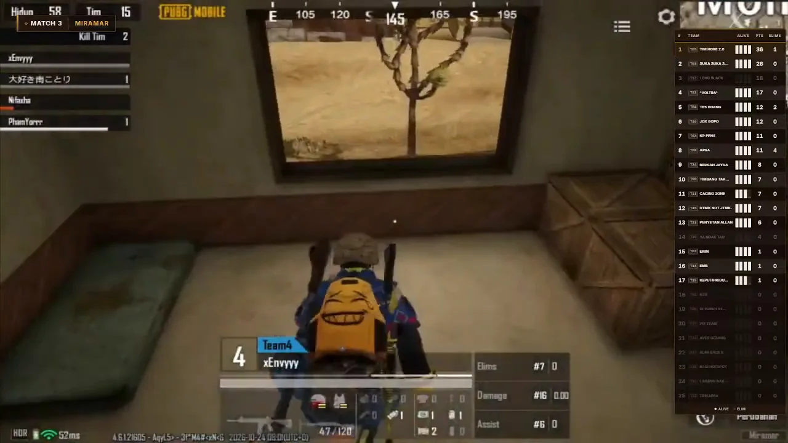
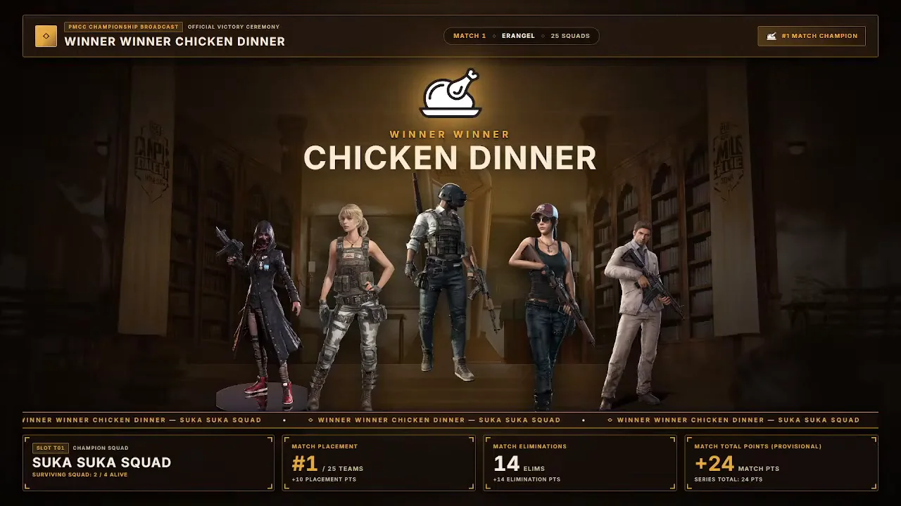
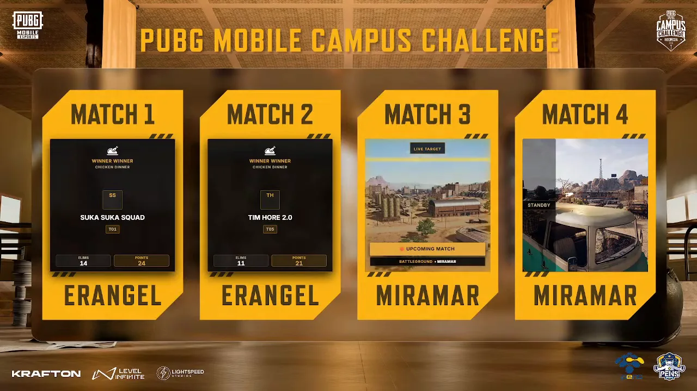

PMCC PENS 2026 Broadcast Overlay
Customizing an open-source PUBG Mobile overlay for a 25-team campus broadcast
Context
PMCC PENS Campus Qualifier 2026 had up to 25 registered PENS teams across an online qualifier (Oct 18) and an offline grand final (Oct 24). I adapted an open-source PUBG Mobile overlay for the event and ran the OBS production for all 8 matches.
What I built
- Expanded the system from 16 to 25 teams.
- Added a Manual Mode failover so standings stay on screen when the PCOB telemetry feed drops.
- Built 8+ PMCC-branded 1080p60 overlay routes (live standings, final four, WWCD banner, match ranking, map rotation and schedule) and synced them with the official scoring sheet.
- On site: multi-observer phone capture via ADB scrcpy, audio routing for game, casters, and music, and live troubleshooting with zero dead air.
How the pieces connect
pmcc / broadcastWith the telemetry feed
- PCOB telemetry feed
- Forked overlay engine, expanded to 25 teams
- 8+ PMCC overlay routes, 1080p60
- OBS Studio
When the PCOB feed drops
- Manual Mode failover
- Standings stay on screen
Summarised from the project description on this page; not a complete architecture.
Broadcast frames




Watch the broadcast

The video loads from YouTube only after you press play.